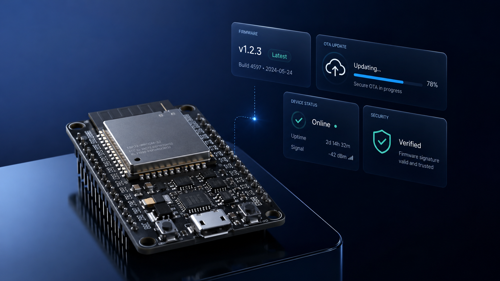

PRODUCT SCENARIO
以智慧門鎖為例，串起 App 與裝置端安全。
使用者看到的不只是 APK 或韌體檔案，而是一個完整 IoT 產品：手機 App、智慧門鎖、感測裝置、韌體版本與連線狀態。Apionix 讓這些資訊回到實際產品情境中被理解。
PLATFORM OVERVIEW
面對 IoT 產品時，安全資訊往往分散在 App、韌體與裝置端。Apionix 將 APK 分析結果、韌體版本資訊與裝置連線狀態集中呈現，讓開發、測試與管理人員都能快速掌握目前風險與後續處理方向。
PRODUCT SCENARIO
使用者看到的不只是 APK 或韌體檔案，而是一個完整 IoT 產品：手機 App、智慧門鎖、感測裝置、韌體版本與連線狀態。Apionix 讓這些資訊回到實際產品情境中被理解。
CORE SERVICES
APK 安全分析與 IoT 韌體／裝置管理是兩個獨立服務。使用者可依需求進入對應功能，最後再彙整成完整的產品安全視圖。
01 / APK SECURITY ANALYSIS
上傳 Android APK 後，系統協助檢查危險權限、敏感 API 與可疑行為，讓 App 端風險能在上線前先被發現。
02 / FIRMWARE & DEVICE MANAGEMENT
集中查看韌體版本、OTA 更新狀態、簽章驗證與裝置連線資訊，協助團隊掌握裝置端部署與營運狀態。

USE CASE
以智慧門鎖等 IoT 產品為例，Apionix 將 App、韌體與裝置端資訊整合於同一介面，讓使用者不必切換不同工具，也能快速理解產品目前的安全狀態與需要優先處理的項目。
SERVICE FLOW
APK 分析與 IoT 管理為兩個獨立服務流程，使用者可依需求選擇對應功能，再分別完成檢測與管理。